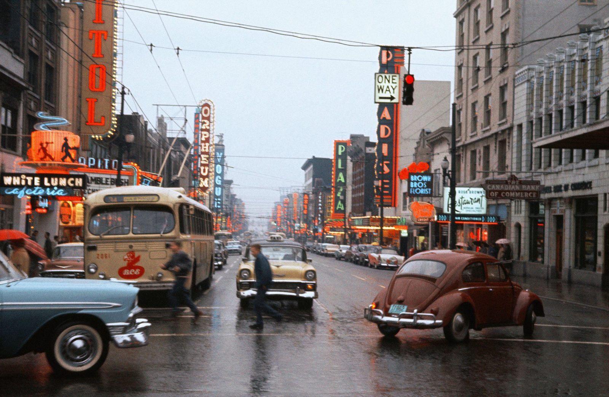
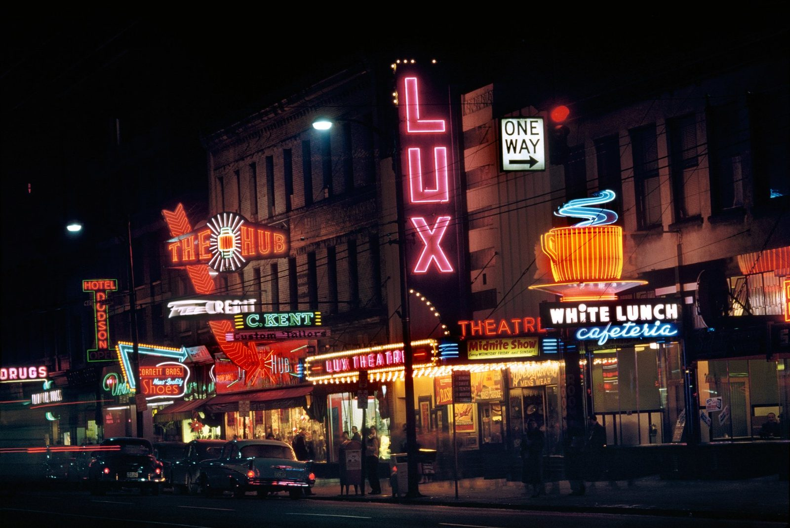
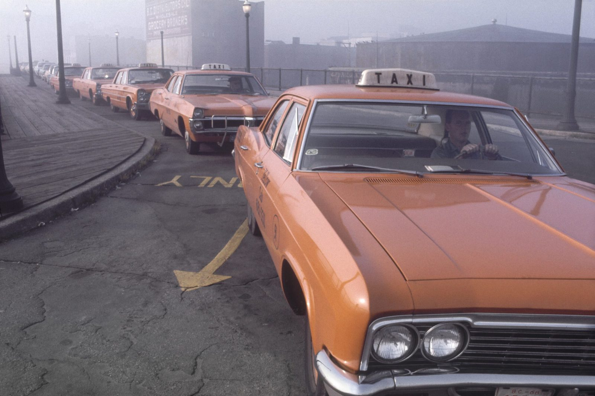
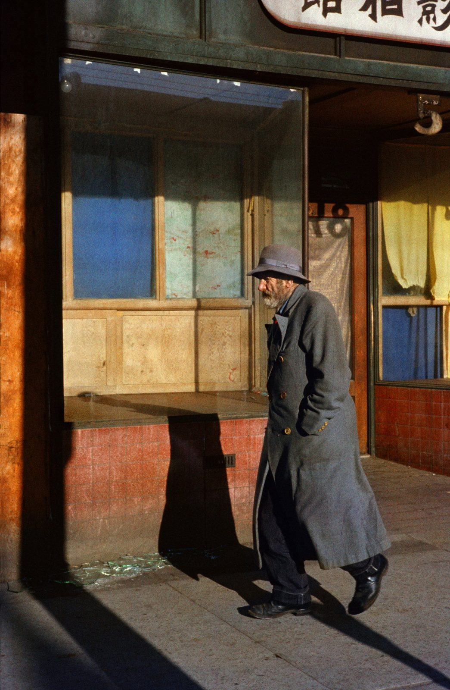
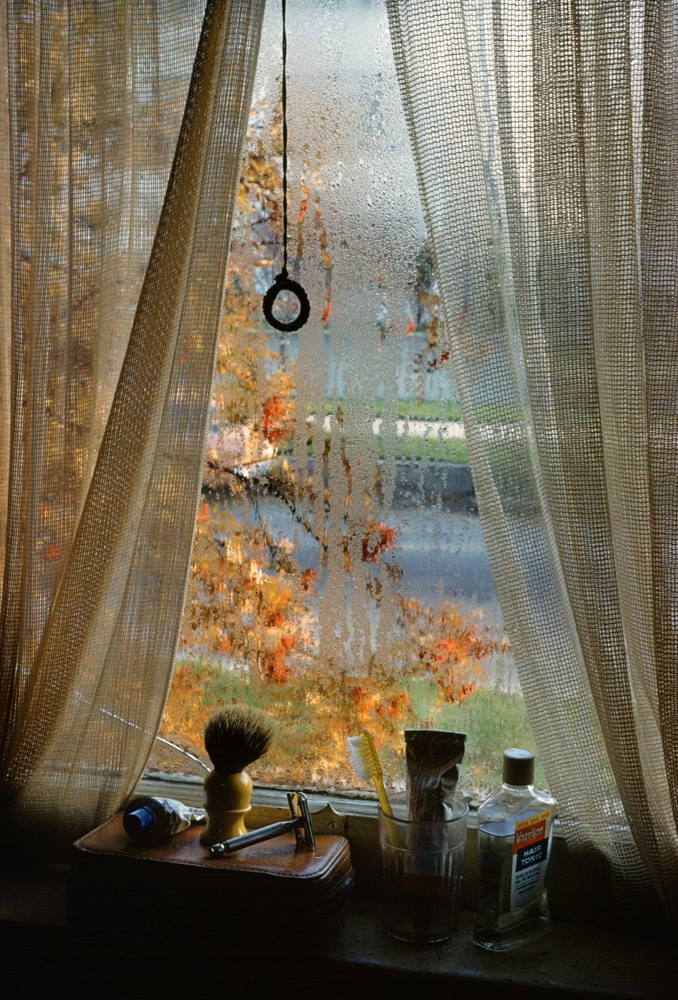
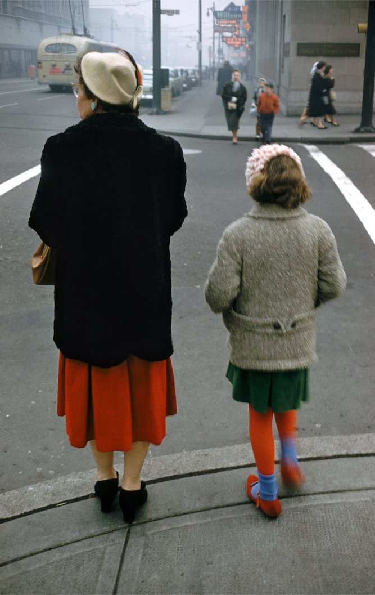
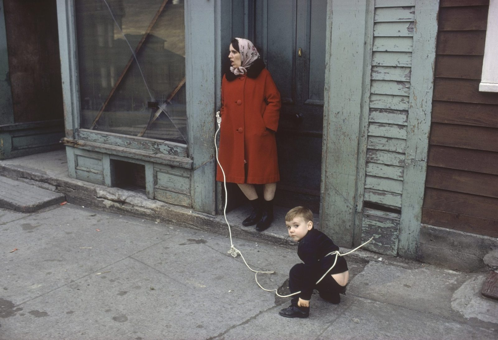
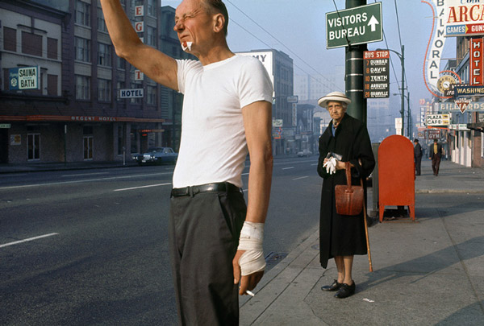

필름 좀 만져본 사람이라면 '코다크롬'이라는 이름 앞에서 한 번쯤 멈칫한다. 그 색. 빨강이 유독 깊고, 그늘마저 어딘가 따뜻했던 그 슬라이드 필름.
그런데 그 코다크롬으로 1950년대 밴쿠버의 뒷골목을 찍고 다닌 사람이 있었다고 하면, 보통 "그래서 그게 누군데?" 하는 반응이 먼저 돌아온다. 프레드 헤어조그(Fred Herzog). 살아서 거의 평생을 무명으로 보내다가, 일흔이 훌쩍 넘어서야 세상이 겨우 알아본 사진가다.
퇴근하면, 거리로 나갔다
그는 1930년 독일 슈투트가르트에서 태어났다. 전쟁으로 부모를 모두 잃고, 1952년 스물둘의 나이에 캐나다로 건너간다. 이듬해 정착한 도시가 밴쿠버였고, 그는 거기서 평생을 살았다.
먹고산 직업은 의외로 사진작가가 아니라 병원의 의료 사진가였다. 수술 장면이나 환부를 기록하는, 낭만과는 거리가 먼 일이다. 진짜 사진은 퇴근하고 주말에 찍었다. 카메라 하나 메고 도시를 쏘다니면서. 1968년부터 몇 해는 사이먼프레이저대와 브리티시컬럼비아대 미술학과에 출강도 했지만, 본업은 끝까지 병원 쪽이었다.

색이 곧 주제였다
그가 들이댄 건 미술관에 걸릴 법한 풍경이 아니었다. 네온 간판, 중고차 가게, 주유소, 싸구려 식당, 일 끝나고 버스를 기다리는 사람들. 그 시절 누구도 "작품"이라 부르지 않던 평범한 도시의 살갗이었다.

거기에 코다크롬 특유의 색이 입혀지면 이야기가 달라진다. 비 젖은 아스팔트의 빨간 반사, 쇼윈도의 형광, 사람들 외투의 채도. 헤어조그의 사진에서 색은 장식이 아니라 주제 그 자체였다. 흑백이 점잖은 예술로 대접받던 시절에, 그는 고집스럽게 거리의 색을 모았다.

그는 사람도 즐겨 담았다. 메인 스트리트의 노인, 자기 셋방의 한 귀퉁이까지. 거창한 사건이 아니라, 매일 스치는 얼굴과 자리에 카메라를 들이댔다.


코다크롬은 왜 그런 색이었을까
잠깐 필름 얘기를 하고 가자. 코다크롬은 1935년에 나온 컬러 리버설, 그러니까 슬라이드 필름이다. 다른 컬러 필름과 결정적으로 달랐던 건 '색을 만드는 방식'이었다.
보통의 컬러 필름은 색을 내는 발색제를 유제 안에 미리 품고 있다. 반면 코다크롬의 유제는 사실상 흑백 감광층 세 겹에 가까웠고, 색은 촬영이 아니라 현상 과정에서 층마다 다시 빛을 줘가며 염료를 입히는 코닥만의 독자 공정으로 완성됐다. 그래서 동네 현상소에서는 손도 못 댔고, 전 세계에 몇 안 되는 전용 랩에서만 현상이 가능했다.

까다로운 만큼 보상도 컸다. 입자가 곱고 선예도가 높았으며, 무엇보다 염료가 오래 안정적이라 수십 년이 지나도 색이 잘 바래지 않았다. 헤어조그가 50년대에 찍은 슬라이드가 2000년대까지 처음 그 색 그대로 살아 있었던 건 순전히 이 지독한 내구성 덕이다. 이 대목을 기억해두자. 뒤에서 다시 나온다.
20년을 앞섰지만, 보이지 않았다
그가 컬러로 거리를 찍기 시작한 게 1953년이다. 윌리엄 이글스턴이 뉴욕 현대미술관 전시로 "컬러도 예술이 될 수 있다"는 논쟁에 불을 댕긴 게 1976년, 스티븐 쇼어가 컬러를 들고나온 것도 70년대다. 헤어조그는 그들보다 스무 해는 먼저 컬러로 길거리에 서 있었다. 그런데 왜 아무도 몰랐을까.
답은 좀 얄궂게도, 그가 사랑한 매체 안에 있었다. 코다크롬은 포지티브, 곧 슬라이드다. 프로젝터로 벽에 쏘면 그 색이 살아나지만, 그 시절 기술로는 슬라이드의 색을 그대로 옮긴 인화가 사실상 불가능했다. 미술관과 갤러리는 벽에 거는 프린트를 원하는데, 헤어조그가 가진 건 영사해야만 제 색이 나오는 슬라이드 한 무더기였다. 작품은 이미 다 찍혀 있었다. 세상에 내걸 형태로 바꿀 방법이 없었을 뿐이다.

스캐너가 데려온 뒤늦은 빛
구원은 엉뚱하게도 디지털에서 왔다. 2000년대 들어 필름 스캔과 아카이벌 피그먼트(잉크젯) 프린트가 무르익으면서, 비로소 코다크롬 슬라이드의 그 색을 종이 위에 거의 그대로 옮길 수 있게 됐다. 수십 년 서랍 속에 잠들어 있던 슬라이드가 그제야 프린트가 되어 벽에 걸렸다. 아까 말한 코다크롬의 내구성이 여기서 빛을 본다. 색이 안 바랜 덕에, 반세기 전의 빛이 처음 그대로 인화된 것이다.

2007년 밴쿠버 미술관 회고전. 헤어조그는 이미 일흔일곱이었다. 반응은 폭발적이었고 전시는 파리, 뉴욕, 베를린, 토론토로 이어졌다. 2010년 에밀리카 미술대학 명예박사, 2014년에는 캐나다 시각예술 평생공로상인 Audain Prize까지 받았다. 평생 무명이던 사람에게 뒤늦은 인정이 한꺼번에 쏟아진 셈이다.
도구의 시간, 사람의 시간
필름을 쓰는 입장에서 이 이야기가 묘하게 오래 남는 건, 결국 도구의 운명이 사람의 운명을 끌고 다닌다는 대목 때문이다. 헤어조그가 게을렀거나 재능이 모자랐던 게 아니다. 그가 택한 필름이 그 시대의 출력 기술과 박자가 안 맞았을 뿐이다. 코다크롬은 2009년 단종됐고, 마지막 현상소가 문을 닫으며 완전히 역사가 됐다. 그런데 정작 그 필름의 색을 가장 끈질기게 증명한 작업은, 필름이 사라지기 시작할 무렵에야 세상 앞에 나왔다. 순서가 한참 뒤바뀐 셈이다.
헤어조그는 2019년 9월, 여든여덟에 세상을 떠났다. 다행히 자기 사진이 벽에 걸리고, 사람들이 그 빨강 앞에서 멈춰 서는 걸 충분히 보고 갔다. 좋은 사진은 언젠가 알아봐 준다는 말, 너무 낭만적이라 평소엔 잘 안 믿는 편인데, 헤어조그 앞에서는 한 번쯤 믿어보고 싶어진다. 다만 그 '언젠가'가 오는 데 50년이 걸렸다는 것, 그리고 그 시간을 앞당긴 게 평론가가 아니라 스캐너와 잉크젯이었다는 것만은 기억해 두자.